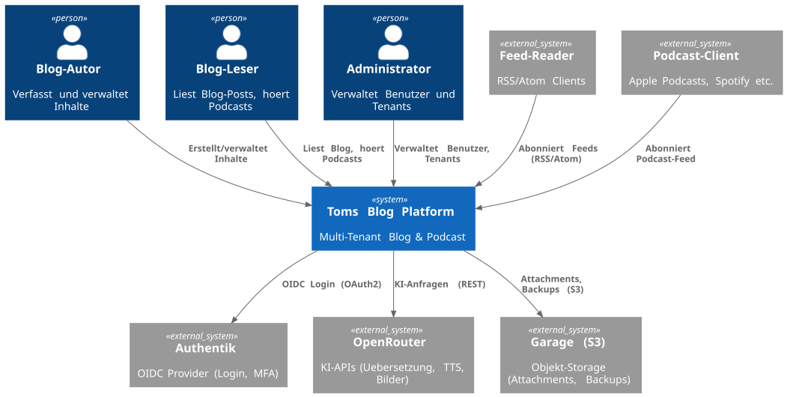

3. Kontextabgrenzung
1. Fachlicher Kontext
Das Kontextdiagramm zeigt die Systemgrenzen und die wesentlichen externen Akteure. Die Blog-Funktionalität (STK-001) wird über eine REST API bereitgestellt, während Podcast- und Video-Inhalte (STK-009) über GraphQL angebunden werden.

2. Technischer Kontext
| Schnittstelle | Technologie | Beschreibung |
|---|---|---|
Blog REST API |
HTTP/JSON |
CRUD für Posts, Tags, Autoren (Thymeleaf + Angular) |
Podcast GraphQL API |
HTTP/GraphQL |
Queries/Mutations für Podcast-Episoden (React) |
Video GraphQL API |
HTTP/GraphQL |
Queries/Mutations für Video-Episoden (React) |
Authentik OIDC |
HTTPS/OAuth2 |
Authentifizierung (Login, MFA) ueber OIDC Provider (ADR-0027) |
User Management gRPC |
HTTP/2 Protobuf |
Profil-Synchronisation, Rollen, Tenant-Einstellungen |
OpenRouter |
HTTPS/JSON |
KI-Funktionen (Uebersetzung, TTS, Bildgenerierung) |
Kafka Events |
Kafka Protocol |
Asynchrone Service-Kommunikation |
RabbitMQ Tasks |
AMQP |
Task-Queues (Uebersetzung, TTS, Snapshots) |
Garage (S3) |
HTTPS/S3 |
Objekt-Storage fuer Attachments und Backups |
RSS/Atom Feeds |
HTTP/XML |
Oeffentliche Feeds fuer Reader |